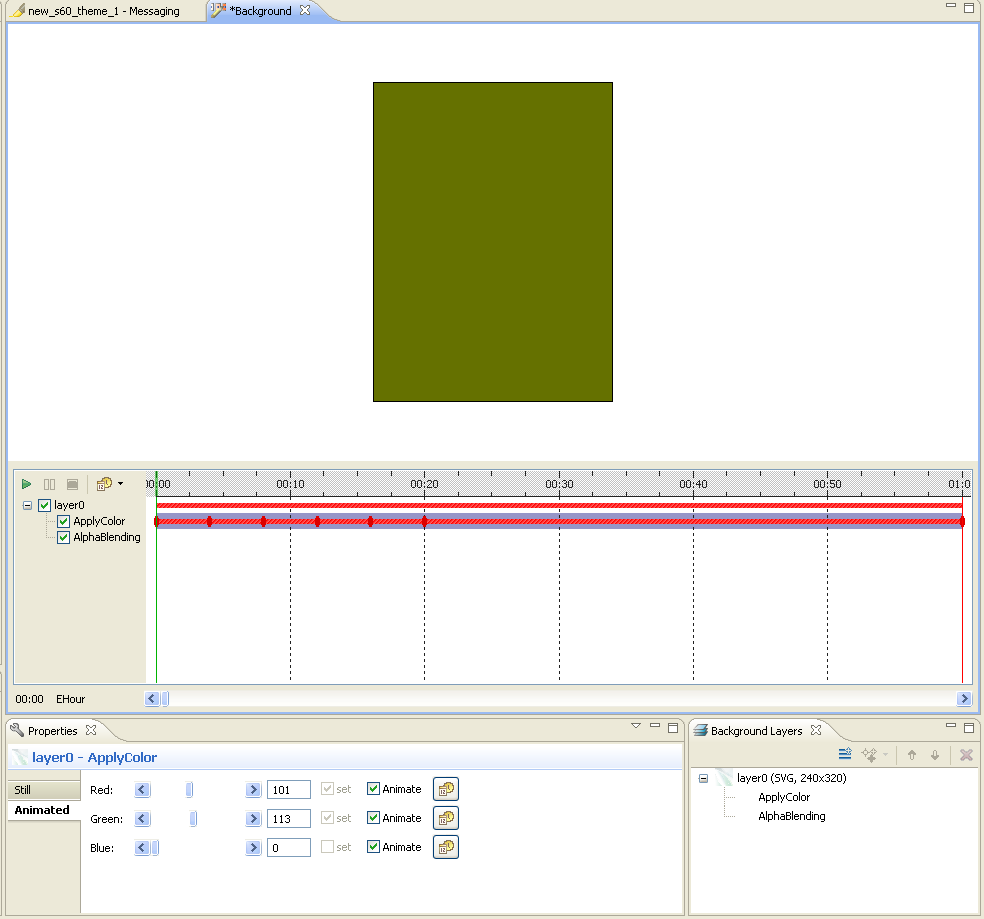

Working with animations
In Carbide.ui, you can manage layer and frame animations. For the layer
animations, you can add effects and animated effects to the following
components:
- Highlights
- Background
- Navi Pane
For the frame animations, you can animate certain icons. You can add or
delete frames for the following animated icons:
Carbide.ui allows you to:
- Create and edit simple animated components
- Edit animated icons consisting of frames
- Manage effects
- Use animation timing
- Preview animations

Figure: Animations